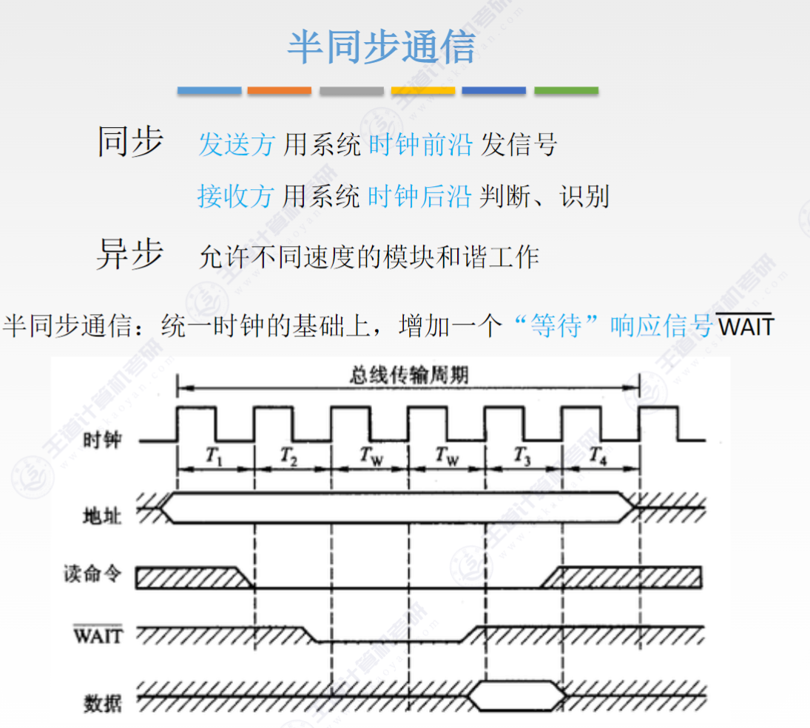
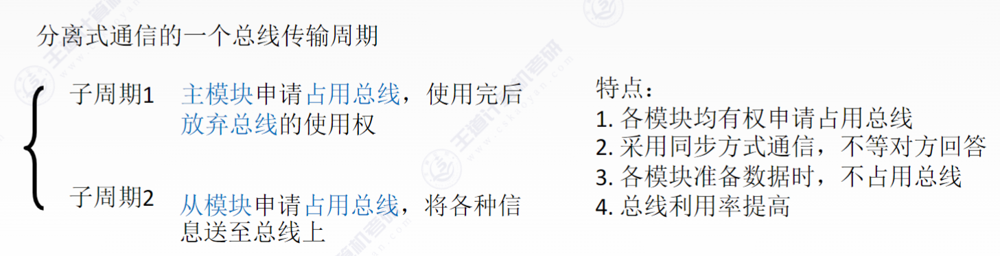
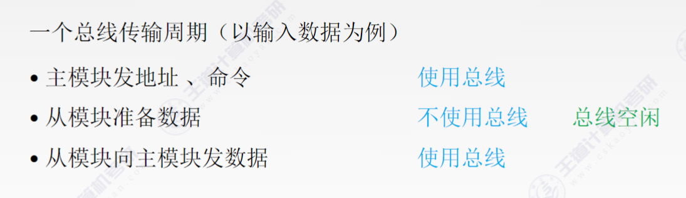

# Ch6 总线
# 概述
# 概念
总线是一组能为多个部件分时和共享的公共信息传送线路。分时和共享是总线的两个特点
- 分时：同一时刻只允许有一个部件向总线发送信息
- 共享：总线上可以挂接多个部件
总线设备：按对总线有无控制权分 - 主设备：发出总线请求且获得总线控制权的设备
- 从设备：被主设备访问的设备，只能响应从这设备发来的各种总线命令
特性：机械特性（尺寸、形状）、电气特性（传输方向、有效的电平范围）、功能特性（没跟传输线的功能）、时间特性（信号和时序的关系）
# 分类
- 按功能
- 片内总线（CPU 内部的，连接各寄存器以及寄存器和 ALU）
- 系统总线（连接 CPU、主存、I/O）。按传输内容又分为数据总线（数据、指令、终端类型号，双向传输）、地址总线（主存单元或 IO 端口地址，单向传输）、控制总线（clk, rst, 总线请求 / 允许，中断请求 / 回答，r/w…）
- I/O 总线（将低速的 IO 和告诉总线分离，常见的有 USB/PCI）
- 通信总线（外部总线，计算机系统之间或计算机系统与其他系统）
- 按时序控制方式
- 同步总线
- 异步总线
- 按数据传输方式
- 串行总线（一条双向或两条单向，数据按 bit 串行顺序传输，适合长距离通信）
- 并行总线（有多条双向，容易出现干扰 / 延迟，适合近距离通信）
# 系统总线的结构
- 单总线结构
CPU，主存，IO，都挂在一组（地址、数据、控制）总线上，允许 IO 之间、IO 与主存直接交换信息
结构简单、成本低、易于接入新的设备
贷款低、负载中、不支持并发传送

- 双总线结构
一条主存总线，一条 I/O 总线
主存总线支持突发传送，突发传送（Burst Transfer）是一种数据传输方式，它允许在一次地址发送后，连续传输多个数据块，而不需要为每个数据块单独发送地址和控制信号
将低速的 I/O 设备分离开来，实现了存储器总线和 I/O 总线的分离
需要增加通道等硬件设备

- 三总线结构
主存总线、I/O 总线、直接内存访问 (DMA) 总线
DMA 允许外部设备（如硬盘、网卡、显卡）直接与主存进行数据交换，无需 CPU 的直接参与和干预，把 CPU 从繁琐、低效的数据搬运工作中解放出来，让它可以去做更复杂的计算任务
优点是提高了 I/O 设备的性能，使其更快地响应命令，提高系统吞吐量；缺点是任意时刻只能使用一种总线，系统工作效率较低（意思是一个设备不能同时使用多个总线，比如主存总线和 DMA 总线不能同时对主存进行存取）


# 常见的总线标准
略
# 总线的性能指标
- 总线时钟周期
- 总线时钟频率
- 总线传输周期：申请、寻址、传输、结束
- 总线工作频率：1 / 总线（传输）周期
- 总线宽度：通常指数据总线的根数
- 总线带宽：最大数据传输速率，B/s，带宽 = 总线工作频率 *（总线宽度 / 8）
- 总线复用：一种信号现在不同的时间传输不同的信息，比如地址 / 数据线复用（地址通过数据线传送）
- 信号线数：地址总线、数据总线、控制总线数量的总和
最主要的性能指标：总线宽度、总线工作频率、总线带宽
带宽 = 总线工作频率 * 总线宽度 bits/s
# 总线事务和定时
# 总线事务
从请求总线到完成总线使用的操作序列称为总线事务，典型的总线事务包括请求操作、仲裁操作、地址传输、数据传输和总线释放
- 请求阶段：主设备（CPU 或 DMA）发出总线传输请求，获得总线控制权
- 仲裁阶段：总选仲裁机构决定将下一个传输周期的总线使用权授予某个申请者
- 寻址阶段：传输地址和命令，启动从模块
- 传输阶段：主模块和从模块进行数据交换，单向或双向
- 释放阶段：主模块有关信息从系统总线上撤除，让出总线使用权、
数据传送方式：突发方式和非突发方式
突发传送：寻址阶段发送的是连续数据单元的首地址，传输阶段传送多个连续单元的数据，每个时钟周期可以传送一个字长的信息（如果总线宽度等于一个字长），一组数据全部传送完毕后再释放总线
非突发传送：每个传送周期内都先传送地址，再传送数据，每次只能传输一个字长的数据
# 总线定时
同步、异步、半同步、分离式
- 同步定时方式
适用于总线较短且部件存取时间比较接近的系统。每个部件或设备发送或接收信息都在固定的总线传送周期中，一个总线的传送周期结束，下一个总线传送周期开始
优点：传送速度快，具有较高的传输速率；总线控制逻辑简单。
缺点：主从设备属于强制性同步；不能及时进行数据通信的有效性检验，可靠性较差 - 异步定时方式
依靠传送双方相互制约的 “握手” 信号来实现定时控制。主设备发出请求，从设备接收到请求后发出回答。
优点：总线周期长度可变，能保证两个工作速度相差很大的部件或设备之间可靠地进行信息交换，自动适应时间的配合。
缺点：比同步控制方式稍复杂一些，速度比同步定时方式慢
- 根据 “请求” 和 “回答” 的撤销是否互锁分为
- 不互锁方式：发出请求不必等回答，一段时间后自动撤销请求信号。收到请求信号后发出回答信号，一段时间后自动撤销回答信号。（速度最快 可靠性最差）
- 半互锁方式：发出请求后等待收到回答信号才撤销请求信号。收到请求信号后发出回答信号，一段时间后自动撤销回答信号。
- 全互锁方式：发出请求后等待收到回答信号才撤销请求信号，收到请求信号后发出回答，必须获知请求信号撤销之后才撤销回答信号（最可靠 速度最慢）
异步串行通信的方式一步串行通信的第一位是开始位，表示字符传送的开始。铜芯线上没有数据传送时处于逻辑 "1" 状态，发出逻辑 "0" 为开始位在从最低位开始传输信号。发送完字符之后可以发送几奇偶校验（若有），之后发送停止位。
-
半同步定时方式

保留时钟信号的同时增设 Wait 响应信号线，Wait=1 的时候才取数据
优点：控制方式比异步简单
缺点：时钟频率不能太高 -
分离式定时方式
将总线事务分解为请求和应答两个子过程。第一个子过程中，主设备发送命令、地址到总线上，发完立即释放总线（第一个字过程很短）。第二个另外以个设备接受命令并发送数据到总线。两个子过程都只有单向信息流，每个设备都变为主设备。


在空闲阶段释放总线使总线可接受其他设备的请求
控制复杂，开销大